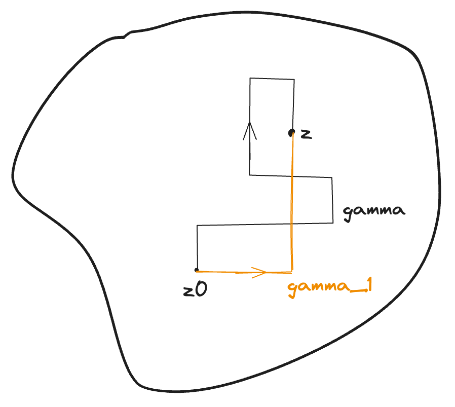
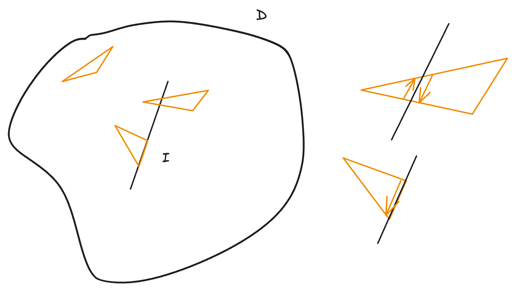
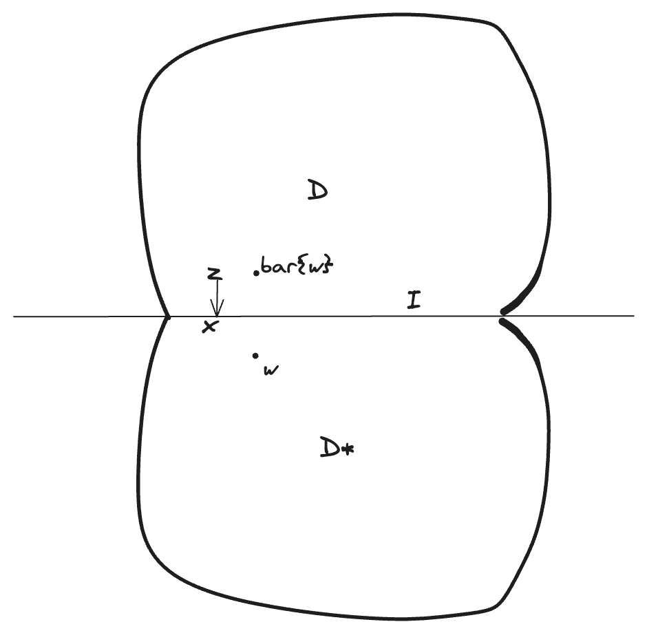
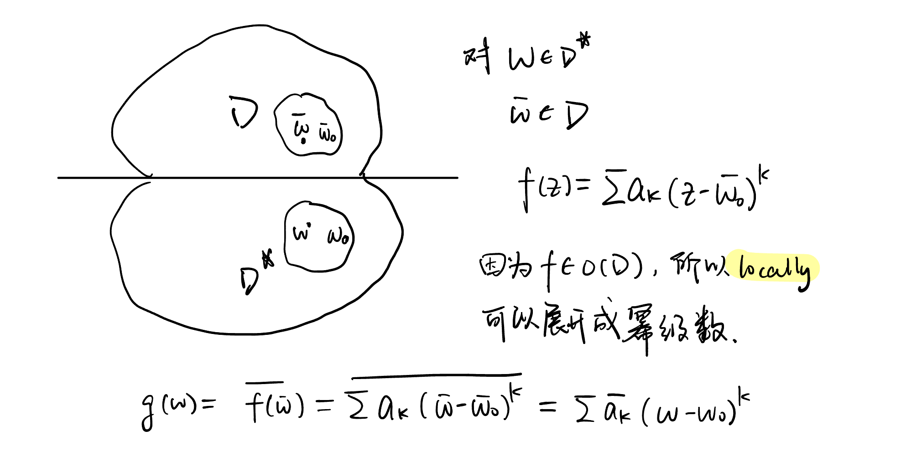

Morera定理
柯西定理的逆敘述
Theo (Morera)
\(D\subset \mathbb{C}\) simply-connected domain. Let \(f\in C(D)\), if \(\int_{\partial \triangle}f(z)dz=0\), for any triangle \(\triangle\) in \(D\), then \(f\in O(D)\) \(\blacklozenge\)
\[ 連續 + \int_{\partial \triangle}f(z)dz=0 \Rightarrow 解析函數 \]
\(\triangle\): 對應simple closed curve
pf.
Define \[ F(z)=\int_{\Gamma} f(z)dz \]
well-defined: \(\Gamma-\Gamma_1=0 \Rightarrow \Gamma=\Gamma_1\)（轉一圈為0）

\[ F'(z)=f(z), \therefore F\in O(D) \]
解析函數在每個點附近都能展開成冪級數，就能微分無窮多次
\[ \therefore f\in O(D) \ \blacksquare. \]
例題 \(D\subset \mathbb{C}\), \(I\subset D\) (closed interval). \(f\in C(D)\)
Assume \(f\in O(D/I)\), 挖掉I後D還是開集
Is \(f\in O(D)\)?
手上只有Morera

Theo (Schwarz reflection principle)
Let \(D\subset \Pi_+\) (open upper half space), s.t. \(\partial D\cap \{x-axis\}=I\) closed interval.
Let \(D^*=\{\bar{z}|z\in D\}\)
let \(\Omega=D\cup \mathring{I}\cup D^*\), \(\mathring{I}\) 是 I 的interior
If \(f\in O(D)\cap C(D\cup \mathring{I})\), and \(f|_{\mathring{I}}\) is real
set \(g=\Omega\rightarrow \mathbb{C}\)

\[ g(z)=\begin{cases} f(z) &z\in D\\ f(z) &z\in \mathring{I}\\ \bar{f}(\bar{z})& z\in D^* \end{cases} \]
Then \(g\in O(\Omega)\). \(\blacklozenge\)
- 考慮連續性
\(D,D^*\)上都連續，在\(I\)上
\[ f(z)=u(z)+iv(z)\quad z\rightarrow x \Rightarrow f(x)=u(x) \]
\[ f(w)=u(\bar{w})-iv(\bar{w})\quad w\rightarrow x, \bar{w}\rightarrow x \Rightarrow f(x)=u(x) \]
